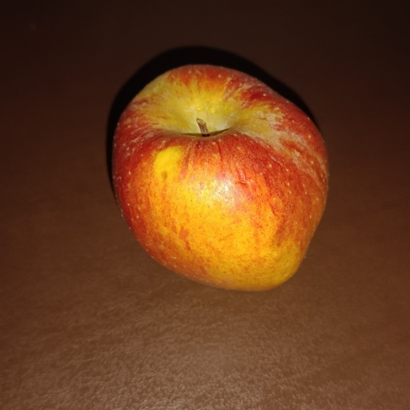
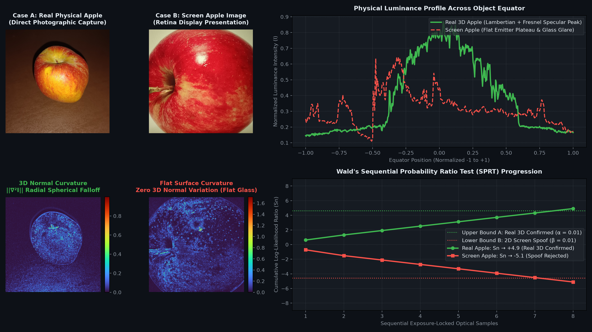

Module 01 · Problem & Core Thesis
Canes Navigate the Floor. SAARTHI Navigates the Table.
100% Offline · MediaTek Dimensity 700
Gap 01 · Hardware
0–15 cm only
Canes Stop at Floor
Cups, bottles & sharp edges stay invisible.
Gap 02 · Audio Noise
10 labels / sec
Vision Apps Yell Non-Stop
Audio firehose blinds spatial hearing.
SAARTHI · Solution
Silent by Default
Two-Map Table Mind
Speaks once when mental map is wrong.
Three Core Pillars
Pillar 01
Sally–Anne Engine
Proactive Silence
Tracks Physical World vs Spoken User Belief.
Pillar 02
9/10 Vivo Verified
Torch Anti-Spoof
Exposure-locked flash + Wald SPRT rejects photos.
Pillar 03
<50 ms Audio-Haptic
Closed-Loop Guidance
MediaPipe GPU hands steer reaches & point-ask.
Verified On-Device Baseline
Vivo V21e · No ARCore
EfficientDet-Lite0 int8
Whisper base.en Offline
246/246 Unit & Replay Tests
Zero Mocks in Demo
Module 02 · Engineering Matrix
Capabilities & Verified Realization
Phone-Only · Zero Cloud Required
Capability
User Outcome
On-Device Mechanism
Verified Spec
Two-Map Divergence
Proactive Silence
Alerts once when object moves
Gravity + Gyro Table Raycast · WorldMap vs BeliefMap
No ARCore · ≥20 cm
Closed-Loop Hand Guide
Motor Correction
Steers hand, stops wrong reach
MediaPipe GPU 21-Landmarks + Pre-Synthesised Clips
<50 ms · 0.4 s fix
Point & Touch Ask
"What am I pointing at?"
Names touched or pointed item
Index Knuckle → Tip Raycast + 3.5 s Hand Cache
Offline Whisper STT
Personal Object ID
"Is this my watch?"
Distinguishes yours vs look-alike
MobileNet-V3 1024-d Embedder · 0.05 Cosine Margin
78/78 Photo Eval
System 2 Torch Test
"Is this apple real?"
Rejects flat screen photos
Exposure-Locked Flash ΔI + Curvature ∇²I + Wald SPRT
9/10 Vivo Verified
Safety SOS & Diary
Autonomous Protection
Fall SMS + voice memory notes
50 Hz Accel (<0.3g → >2.5g) + Loud Check + GPS SMS
15 s Cancel Window
Module 03 · Interactive Theory of Mind
Two-Map Divergence Sandbox (Sally–Anne)
State: Synchronized (Beliefs Agree)
Top-Down Tabletop Plane
1.0 m × 0.8 m
Drag Objects to Test
Module 04 · Physical Anti-Spoof Proof
System 2: The Torch Test (Real vs Screen Photo)
Case A: Real Physical Apple
Verified: 3D Solid

Curvature ∇²I
0.614 (3D Shift)
Wald SPRT
Sn = +4.91 (> +4.6)
Detector Only
96.8% "apple"
Verdict
REAL OBJECT
Case B: Screen Photo Spoof
Rejected: Flat Screen

Curvature ∇²I
0.130 (Flat Plane)
Wald SPRT
Sn = -5.11 (< -4.6)
Detector Only
97.4% "apple" (Fooled)
Verdict
REJECTED SPOOF
Computed Reflectance & SPRT Proof (
Real_Apple.jpg vs Image_Apple.jpg)
Offline Python Proof · tools/sim/generate_heatmap.py

Module 05 · Architecture & Resilience
4-Stage Pipeline & Thermal / Safety Guardrails
Dimensity 700 · Cable-Pull Safe USB Link
Stage 01
Zero-GC Capture
Camera2 20 fps stride
2 recycled bitmaps
TYPE_GRAVITY + Gyro
Stage 02
Fast Perception
EfficientDet-Lite0 CPU
Table plane raycasting
MediaPipe Hands GPU
Stage 03
Cognitive Arbitrator
World vs Belief diff
Torch Wald SPRT
Index finger raycast
Stage 04
Sensory Delivery
Prepared audio clips
Sub-50 ms haptics
50 Hz Fall SOS SMS
Thermal Governor (D59/D62)
NOMINAL 41°C
• Normal: 20 fps · Guiding: 30 fps · Hot: 15 fps
• Idle hands (>5 s): drops to 2 runs/s
• Heat logged silently — never spoken (D62)
Safety SOS State Machine
AUTONOMOUS
<0.3g Drop
→
>2.5g Spike
→
Still + Sound
→
15 s Alarm
→
SMS + GPS
Verified Vivo V21e Budget
MEASURED
• Camera: 30 fps · Detector: 5–7 runs/s
• Prepared clip audio: 2 ms p50
• USB feed: adb reverse tcp:8765 (1.7 ms)
Module 06 · Future Hardware Concept (Simulated)
3D Acoustic FMCW Transparent Glass Probe
3D Perspective Tabletop · Chirp + IMU Gyro Sweep
Ideal Ultrasonic (UNPROCESSED)
Yaw: 0° · Glass: 0.32 m